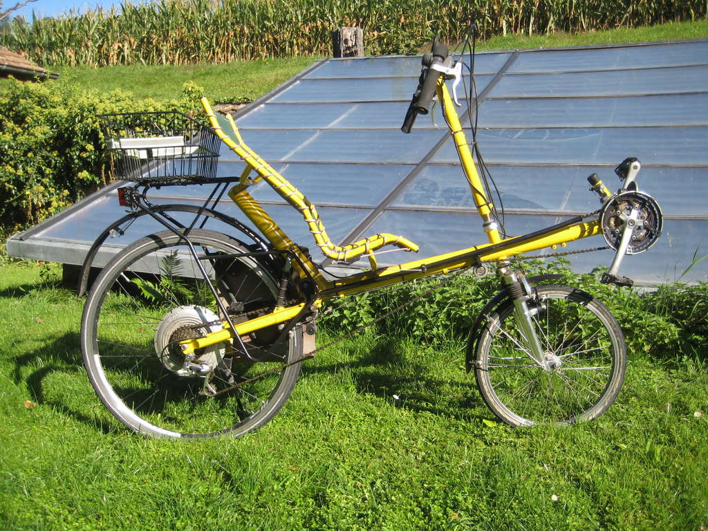

Das voll gefederte Liegerad Pegasus entstand in einer Kleinserie bei Fahrradbau Stolz in Zuerich. Dieses sehr gute erhaltene Exemplar wurde 1996 für Fr. 6000.- gekauft. Es ist in gutem Zustand, jedoch sollte der Vorderreifen ersetzt und die Bremsen revidiert werden. Für Personen bis max. 182 cm Grösse. 2015 wurde ein BionX Elektroantrieb PL 250 HT mit Batterie 48 V 8.8 Ah Li-Mn montiert. Der "Pedelec"-Nabenmotor erlaubt auch Nutzbremsung. Die Batterie befindet sich in der Seitentasche und ist noch in gutem Zustand. Die Konsole (Steuergerät mit Display) funktioniert, zeigt aber nicht richtig an. Auf Wunsch mit Originalhinterrad ohne Antrieb. Mindestpreis Fr. 100.-, Sofortpreis Fr. 1000.-. Anschauen, Probefahren, Abholen in Steffisburg nahe Thun, evtl. auch Lieferung. Auskunft von Theo Schmidt (schmidt@hupi.org)
